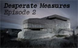

Welcome to the records room.
I’ve dusted off my old files and jump-started my DOS rig to bring you B.J.
Rowan’s new Wolfenstein archive, the official home of my own custom add-ons,
level packs and map sets for Wolfenstein 3-D — including
The Renovation,
Conflict In The Fatherland,
Project Totengraeber…and maybe even
something new.
You’ll also find a sampling of mapping techniques that I’ve
abided by over the years, lest someone else wish to follow in my design
footsteps. And in case you wanted to know more about me or
this site, well, there’s that, too. Check below for recent updates
and goings-on.
Here's the latest.
2012.04.29 — Desperate Measures: Episode 2 released.

After a five-year hiatus, episode two of Desperate Measures has arrived — and you can download it right now. Since my last update, I let my “back to basics” mantra slip a little bit, as you might guess from the fact that there’s now a VSWAP packed in with episode two, containing some new wall textures and sound effects. That’s all, I swear.
Work is underway on episode three as I write this, and I’m also penning that level design handbook that I’ve been threatening to write since, oh, the dawn of time. It’s going to provide some guidance and ideas for those who are designing levels in the classical style.
I’ve also served up a tidbit of history with the Conflict in the Fatherland Developer Journal, a collection of excerpts from my personal notes that were written during the development of CITF.
2007.06.23 — Desperate times call for desperate measures.
I don’t often think about making new Wolfenstein levels — hey, it’s 2007 — but
that inspiration has randomly struck me sporadically in the past few years. It
finally struck enough times to produce the first episode in what may wind up
being my next 60-level map pack,
Desperate Measures — codename BJW60IV.
Yeah, you read that right — there’s a whole episode already finished, and you
can play it right now. No, seriously. Go here
and read all about it. I can’t say for certain whether I’ll actually finish
any more, but sometimes miracles do happen. Tah.
2007.06.22 — Site launched.
After five years of vacuum, I’ve launched this new Wolfenstein website to
serve as the official home for my own projects, both current and historical.
Even to this day, while there’s still a healthy distribution of my work on
other sites, it seems only right that the creator of such work should offer it
directly. And so, here we are.
Those of you who are looking to see more of me on the Wolfenstein scene may be
disappointed, as the launch of this site doesn’t constitute any kind of grand
re-entrance on my part. However, as it happens, I am in the midst of
resurrecting an old project I once alluded to, but never finished — so while I
don’t intend to become a pillar of the community, that community may yet
benefit from more of my work, if it wants to.
How to contact me.
I'd prefer that you didn't, for now. If there's only room in life for one great passion, then I'm running about five over budget. Let's leave it at that. Besides, at this point in time, I'm sure there are others out there who are greater experts on my projects than I am.